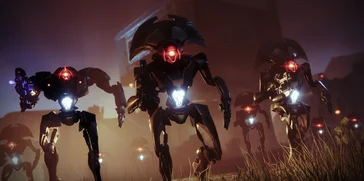

DESTINATIONS - DESTINY
Au cours de votre aventure sur Destiny, vous serez amenés à découvrir différentes destinations, qui sont au nombre de quatre.
TERRE - COSMODROME
LUNE - OCÉAN DES TEMPÊTES
MARS - BAIE DU MÉRIDIEN
VÉNUS - DÉPRESSION D'ISHTAR
BAIE DU MÉRIDIEN, MARS
Depuis la Chute, une grande partie de Mars est retournée à la désolation avant l'arrivée du Voyageur. Comme le reste
des planètes du système solaire, Mars est recouverte de ruines datant de l'Age d'Or. C'est le foyer de Raspoutine,
l'Esprit Tutélaire, une intelligence artificielle programmée pour défendre l'humanité des menaces extérieures.
Avec l'arrivée du Voyageur, la pluie s'est abattue sur Mars, et c'est ici que l'humanité a fait sa première
rencontre avec l'entité sphérique. Une fois la terraformation de Mars complétée, une métropole prospère appelée
Eleuthéria est venue dominer l'horizon - un bastion de la vie humaine sur Mars.
L'entreprise Clovis Bray a eu une forte présence à Eleuthéria, et a commencé à installer ses propres
installations privées, dont une dans le Bassin d'Hellas, qui agissait comme une attraction pour touristes et un site de
recherches sur la technologie des Esprits Tutélaires. Cette installation contient aussi le coeur de l'Esprit Tutélaire
Raspoutine.
Mars est sujette aux incursions de plusieurs factions ennemies, qui sont les Cabals, les
Vex

Les Vex sont une espèce composée d'entités biomécaniques capables de voyager dans le temps. Ils sont arrivés dans
notre système solaire par des portails temporels. Nous ignorons cependant s'ils viennent du passé ou du futur, et nous
ignorons également leur véritable objectif.
Ennemis: les Vex
et la Ruche. Les deux premiers se retrouveront
opposés dans une guerre d'usure dans la Baie du Méridien, une région entourant Eleuthéria; les Cabals se disputant
l'exploitation des ressources et l'étude des artéfacts et structures Vex de la région, dont l'énorme portail d'accès au
Jardin Noir
 Le Jardin Noir est un royaume de Ténèbres, isolé hors du temps et de l'espace.
On raconte que cet endroit serait le lieu de naissance des Vex. Nous ne savons quasiment rien à propos du Jardin Noir,
mais il semble bien gardé par les Sol Reclus. Peu de Gardiens osent s'aventurer dans la Jardin Noir,
et encore moins arrivent à ressortir en vie.
.
Le Jardin Noir est un royaume de Ténèbres, isolé hors du temps et de l'espace.
On raconte que cet endroit serait le lieu de naissance des Vex. Nous ne savons quasiment rien à propos du Jardin Noir,
mais il semble bien gardé par les Sol Reclus. Peu de Gardiens osent s'aventurer dans la Jardin Noir,
et encore moins arrivent à ressortir en vie.
.